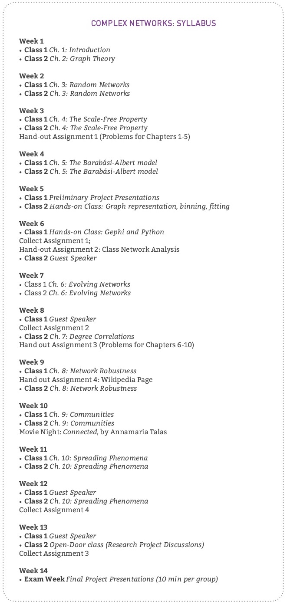
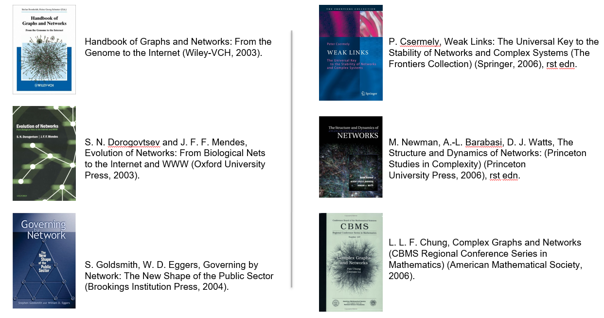
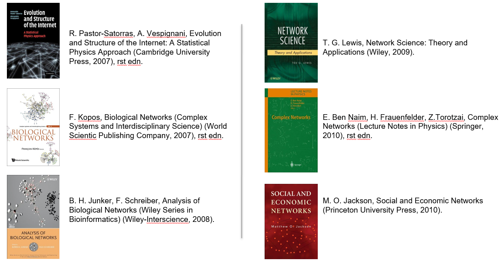
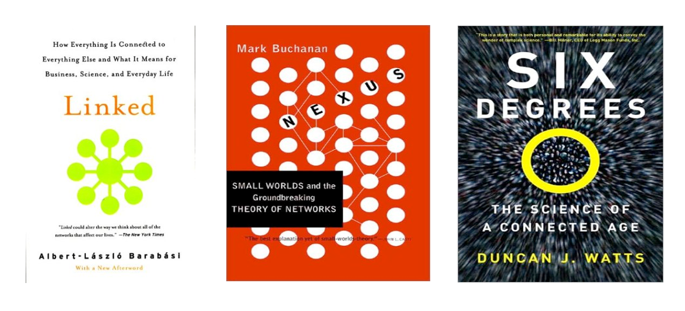
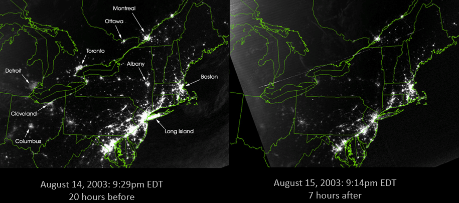
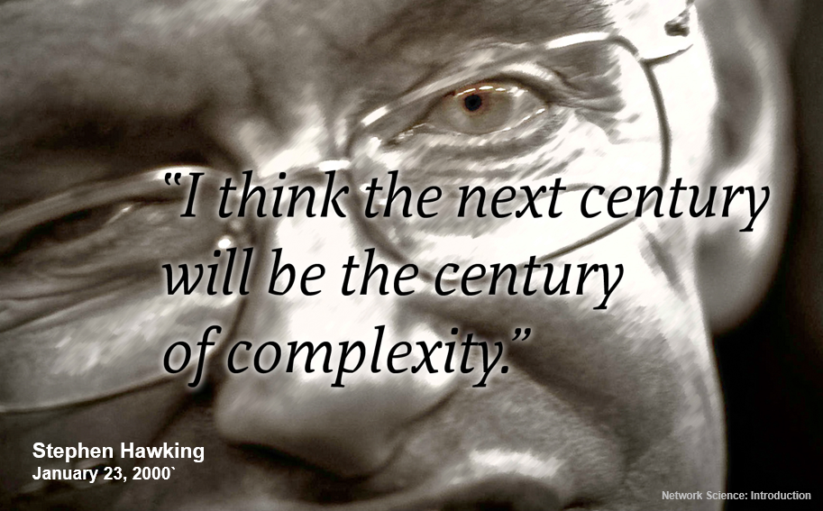
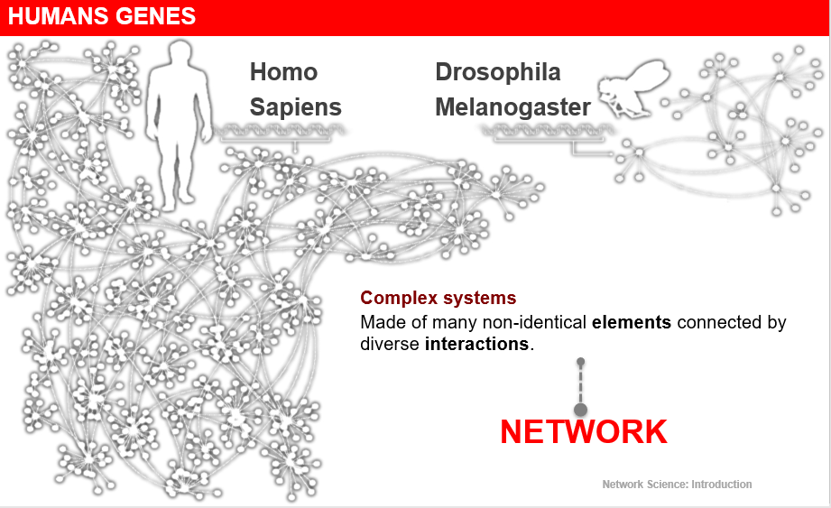

序言
在正式介绍书的内容之前，作者首先对如何使用这本书提出了自己的教学建议，也给了一些线上的资源以供参考。
教学建议：
书里首先给出了一些《网络科学》教学的建议，建议包括内容为作业（Homework
Problems）、Wiki任务（Wiki Assignment）、社交网络分析（Social Network
Analysis）、终期研究项目（Final Research
Project）、软件使用（Software）、电影夜（Movie
Night）以及客座讲授（Guest Speakers）等。
课程可分为14周，具体安排如下表所示：

资源：
在线电子书及配套资源
：网站上的资源包括：在线电子书、PPT Slides、数据集等。
推荐专业书籍：


推荐科普书籍：

第一章 简介
1. 相互连接导致的脆弱性 （Vulnerability Due to Interconnectivity）
我们生活中何处会有网络科学的身影？让我们首先从2003年北美大规模断电(blackout)的故事讲起。

这是当时大断电前（左）后（右）的卫星图，仔细看的话，会发现，大断电后，Toronto,
Detroit, Cleveland, Columbus, Long
Island几个城市/地区在卫星图上看不到了，换句话说，这些城市断电了，这也导致了当时北美几百万人回归无电时代。但这件事是怎么发生的？以后又要怎么避免类似的事情发生呢？
在电力网络系统中，一个局部的电力过载（失败）会转移到其他结点上，如果这个系统过载结点外的其他部分能够“消化”掉这个过载，那么这个过载就是无所谓的，这个系统就是鲁棒（Robust）的；而如果这个过载（失败）太强，当前过载结点的相邻结点也无法承载，那么相邻结点也会过载，进而造成连锁反应，使得整片的电力网络瘫痪，而这就是上述事件发生的原因。更一般地说，相互连接引起了足够大的非局部性（Non-locality），它允许了如电力等能够在其所在网络上进行传播，不管距离有多远。一句话概之：这反映了网络中相互连接导致的脆弱性。
而如何避免这种情况呢？这与网络结构有关。而什么样的网络结构会更鲁棒、稳健？怎么定量描述网络结构与其动力过程，及其对失败（failure）的影响？又如何预测失败的发生？此处先不具体回答，具体在之后的章节中我们都会得到答案。
上文所述的连锁反应的失败（Cascading
failure）其实在大多复杂系统中都可能存在，如互联网中的网络过载、金融网络连锁崩溃（金融危机）、社交网络中的谣言传播等等，这也可见网络科学其实广泛存在于我们的生活中。
那么，这就引出一个问题了，什么是复杂系统呢？
2. 网络是复杂系统的核心（Networks at the Heart of Complex Systems）
霍金说过：“下个世纪会是复杂性科学的世纪。”

如上文所述，在我们生活中，随处可见都是非常复杂的系统，如由几百亿个体合作构成的社会、连接着几百亿通讯工具的通讯系统、每个人由几百亿神经元协同运作的大脑、细胞中几千种基因与代谢物质的交互网络等等，这都是复杂系统的例子。简单来说，在复杂系统中，只知道系统各组分的性质，几乎不可能去推测系统的集体行为，总体并不只是个体的堆砌，具体定义可见维基百科。由于复杂系统在我们生活中如此常见，理解它们显然变得十分重要，而这也会是21世纪人类将面临的巨大科学难题。
而在每个复杂系统背后，总会有一个决定了其中各组分如何交互的网络。
因此，如果我们没有对网络有一个深刻的理解，就更不可能去理解复杂系统的行为了。

那当前去发展网络科学时机是否已经成熟？
3. 为什么当前网络科学得以发展？（Two Forces Helped the Emergence of Network Science & Societal and Scientific Impacts）
图论早由欧拉发展于1735年，那为什么当时没有进一步将图论发展为网络科学呢？
- 当前网络图谱的涌现（The emergence of network
maps）。以建立一个社交网络为例，我需要知道你的朋友，你的朋友的朋友，你的朋友的朋友的朋友，以此类推。这在过去需要花费非常多的精力，是一个几乎不可能的任务。而在现在，有了网络社交的加持，用用爬虫技术得到社交帐户的好友列表，这件事竟也变得易如反掌。同理，有了现代技术的加持，我们还能得到线虫（C.
Elegans)全神经元连接网络，引文网络，蛋白质代谢网络等等。而这些在两个世纪前并不可能做到。
但有了建立网络的条件，我们就一定要研究网络科学吗？这就不得不提它下面这个特点。
- 网络的普适性（The unibersality of network
characteristics）。网络科学中一个关键的发现是：在不同的学科领域中建立起来的网络，竟然有令人惊讶的相似的架构，遵循着同样的组织原则。换句话说，如果我们有了一套完整的网络科学的数学工具，我们就可以用它来探索不同的系统。
除此之外，它又有什么重要的现实意义吗？ - 社会影响（Societal impact）。如在网络上建模的技术/商业模型（互联网、搜索引擎、社交网络等）带来的巨大经济效益；建立传染病网络模型对其传播进行预测对人群健康的影响；乃至于运用网络分析找到本拉登居所这种在打击恐怖主义上的应用等等。 - 科学影响（Scientific impact）。如建立人类大脑连接组、药物设计(要考虑细胞内的连接图)等都离不开网络科学的应用。从2000年到现在，几篇网络科学的经典文章被引用也越来越多，有关网络科学的文章发表数量也越来越多。
几篇经典文章：
- 1998: Watts-Strogatz paper in the most cited Nature publication from 1998; highlighted by ISI as one of the ten most cited papers in physics in the decade after its publication.
- 1999: Barabasi and Albert paper is the most cited Science paper in 1999;highlighted by ISI as one of the ten most cited papers in physics in the decade after its publication.
- 2001: Pastor -Satorras and Vespignani is one of the two most cited papers among the papers published in 2001 by Physical Review Letters.
- 2002: Girvan-Newman is the most cited paper in 2002 Proceedings of the National Academy of Sciences.
吹了这么多，也还是可以看出网络科学确实有发展的必要，也是比较有前景的。最后从一个比较大的角度总结一下网络科学的特点，然后就正式开始网络科学的学习。
4. 网络科学的特点（The characteristics of Network Science）
- 学科交叉性（Interdisciplinary）。正如上文所述，在不同的学科中都能看到网络科学的影子，网络科学也能在很多领域发挥巨大的作用。
- 经验性、数据驱动性（Empirical, data-driven）。这一点是网络科学与图论最大的不同，网络科学不只是为了发展抽象的理论数学工具，而是为了洞见真实数据背后的价值（Insight）。
- 定量与数学性（Quantitative and Mathematical）。网络科学背后最重要的图论（数学）中图的形式与统计物理中对随机性处理的概念框架。当然，在其中我们也可以看到一些控制论、信息论的影子。
- 计算性（Computational）。一般而言，网络科学家不可避免会遇到“大数据”的问题，因此相关研究也对计算机算力提出了比较高的要求。
参考书籍：Network Science - by Albert-Laszlo Barabasi (http://networksciencebook.com/)